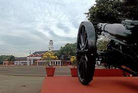

|  |
| The Indian Military Academy (IMA) is one of the oldest military academies in India, and trains officers for the Indian Army.
Located in Dehradun, Uttarakhand, it was established in 1932 following a recommendation by a military committee set up under the chairmanship of General (later Field Marshal) Sir Philip Chetwode. From a class of 40 male cadets in 1932, IMA now has a sanctioned capacity of 1,650. Cadets undergo a training course varying between 3 and 16 months depending on entry criteria. On completion of the course at IMA cadets are permanently commissioned into the army as Lieutenants. |